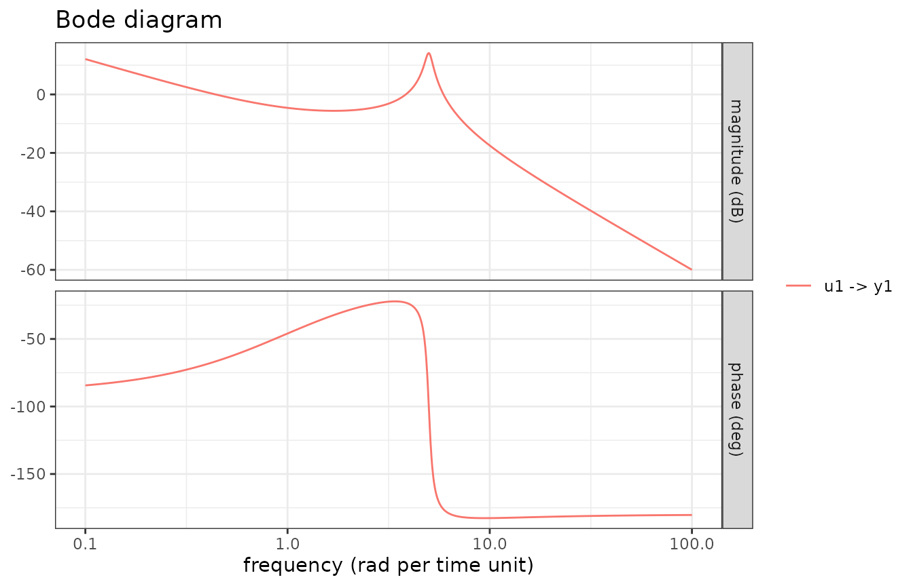
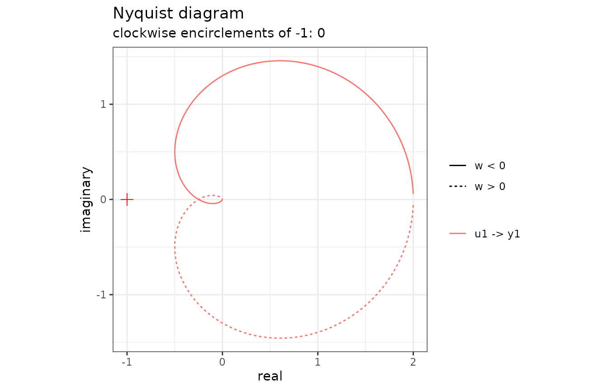
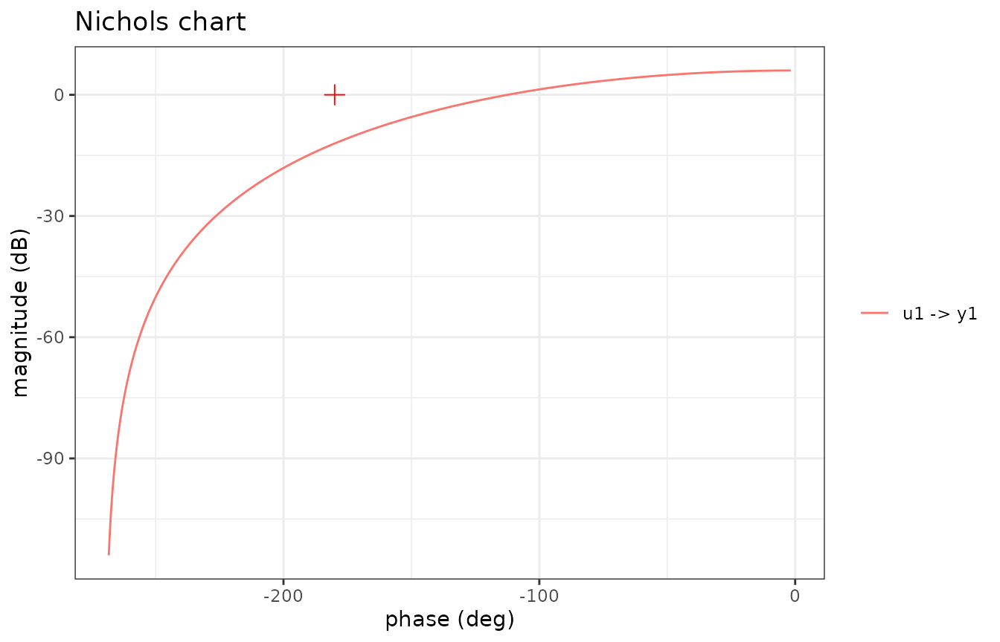

Frequency response and robustness margins
Source:vignettes/frequency-response.Rmd
frequency-response.RmdFrequency response
ctrl_freqresp() evaluates G(j\omega) (or G(e^{j\omega T})) on a grid. State-space
models use one complex linear solve C (j\omega
I - A)^{-1} B + D per frequency on a diagonally balanced
realization; transfer function objects are evaluated from their
coefficients, which is accurate for low orders (convert high-order
transfer functions with ctrl_tf2ss() first). The default
grid from ctrl_freq_grid() extends one to two decades
beyond the poles and zeros and is denser near lightly damped modes:
G <- ctrl_tf(c(10, 10), c(1, 0.4, 25, 0))
fr <- ctrl_freqresp(G, c(0.1, 1, 5))
fr$response[1, 1, ]
#> [1] 0.3937539-4.0022309i 0.4096084-0.4234935i -1.0000000-5.0000000i
range(ctrl_freq_grid(G))
#> [1] 0.1 100.0
plot(ctrl_bode(G))
ctrl_bandwidth() is the first frequency where the gain
falls a given number of decibels (3 by default) below its DC value:
ctrl_bandwidth(ctrl_tf(1, c(1, 1)))
#> [1] 0.9976283Phase is unwrapped along the grid. If the grid is too coarse near a
resonance the unwrapping can jump; supply a denser w when
in doubt.
Nyquist and Nichols plots
L <- ctrl_tf(2, c(1, 3, 3, 1))
ny <- ctrl_nyquist(L)
ny$encirclements
#> [1] 0
plot(ny)
plot(ctrl_nichols(L))
Gain, phase and delay margins
Margins of the unity negative feedback loop with loop transfer
function L are computed from polynomial equations, not by
searching a frequency grid: the phase crossovers are the real roots of
\mathrm{Im}\,L(j\omega) = 0 and the
gain crossovers the roots of |L(j\omega)| =
1. All crossings are returned, and the margins refer to the
critical ones:
m <- ctrl_margin(L)
m
#> Stability margins (unity negative feedback)
#> gain margin: 4 (12.04 dB) at w = 1.732
#> phase margin: 67.6 deg at w = 0.7664
#> delay margin: 1.539
#> nominal closed loop stable: TRUE
m$all_gm
#> frequency gain_margin
#> 1 1.732051 4The margins only mean something for a loop whose nominal closed loop
is stable, which is reported as closed_loop_stable. For
multivariable loops, single-loop margins can be badly optimistic; use
disk margins and singular values.
Disk margins
A disk margin \alpha guarantees stability under simultaneous gain and phase variations f in a disk; with skew 0 the guaranteed range is gain in [(1 - \alpha/2)/(1 + \alpha/2), (1 + \alpha/2)/(1 - \alpha/2)] together with phase \pm 2\arctan(\alpha/2):
ctrl_disk_margin(L)
#> Disk margin (skew 0): alpha = 0.8093 at w = 1.166
#> gain margin: [0.4239, 2.359] (-7.456 to 7.456 dB)
#> phase margin: +/- 44.06 degSensitivity functions
P <- ctrl_tf(1, c(1, 1, 0))
C <- ctrl_tf(c(3, 1), c(0.1, 1))
g4 <- ctrl_gangof4(P, C)
names(g4)
#> [1] "S" "T" "PS" "CS"
ctrl_peak(g4$S)
#> $gain
#> [1] 1.148627
#>
#> $frequency
#> [1] 8.572122For a loop transfer function alone, ctrl_sensitivity()
returns the sensitivity S = (I +
L)^{-1} and complementary sensitivity T
= L (I + L)^{-1}:
st <- ctrl_sensitivity(C * P)
ctrl_peak(st$S)
#> $gain
#> [1] 1.148627
#>
#> $frequency
#> [1] 8.572122
ctrl_peak(st$T)
#> $gain
#> [1] 1
#>
#> $frequency
#> [1] 0The peak of the sensitivity M_s = \|S\|_\infty is the inverse of the distance from the Nyquist curve to the critical point, a single number that bounds both gain and phase margins.
System norms
sys <- ctrl_ss(matrix(c(0, 1, -4, -0.4), 2, byrow = TRUE), c(0, 1), c(1, 0))
ctrl_norm(sys, "2")
#> [1] 0.559017
ctrl_norm(sys, "inf")
#> [1] 1.256297
#> attr(,"frequency")
#> [1] 1.979899
#> attr(,"bounds")
#> [1] 1.256297 1.256297The H2 norm is \|C L_c\|_F, where
the controllability Gramian factor L_c
L_c^\top = W_c is computed directly by Hammarling’s method (the
Gramian itself is never formed, so a realization with nearly canceling
directions keeps its accuracy); the H-infinity norm from the
Bruinsma-Steinbuch iteration on the eigenvalues of a Hamiltonian matrix,
which converges quadratically and returns certified lower and upper
bounds (attribute bounds) and the peak frequency. For the
oscillator above the peak is close to the resonance \omega = 2:
attributes(ctrl_norm(sys, "inf"))
#> $frequency
#> [1] 1.979899
#>
#> $bounds
#> [1] 1.256297 1.256297